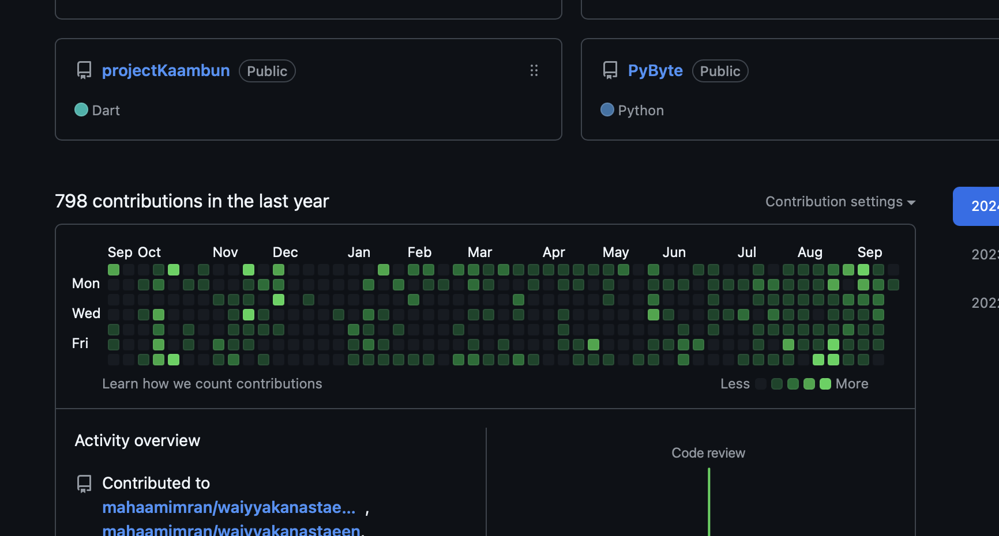
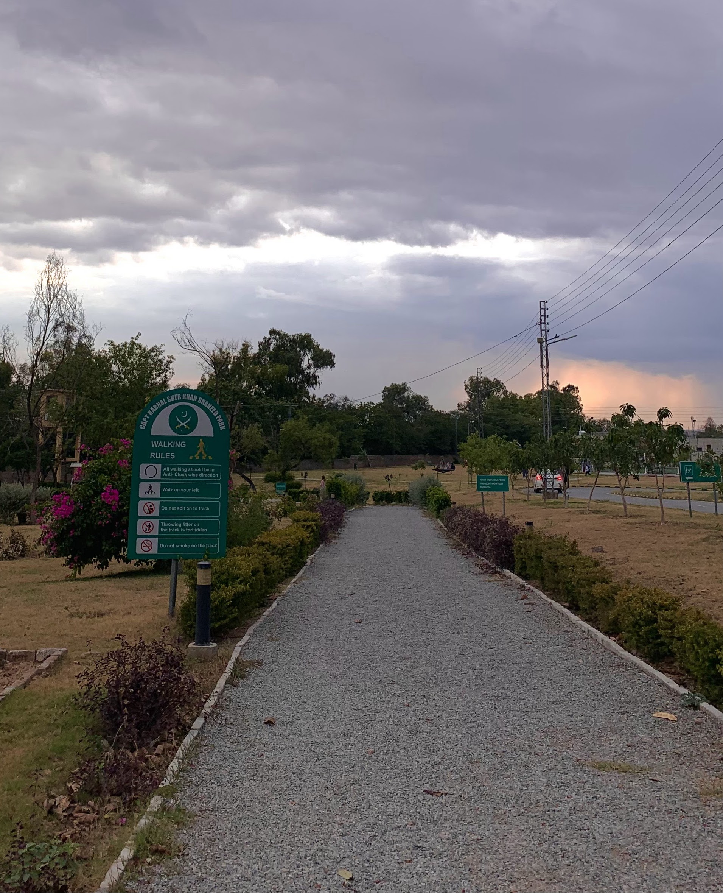
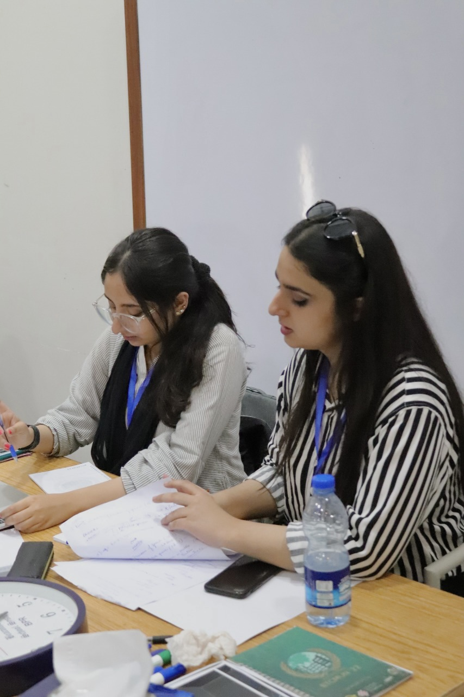
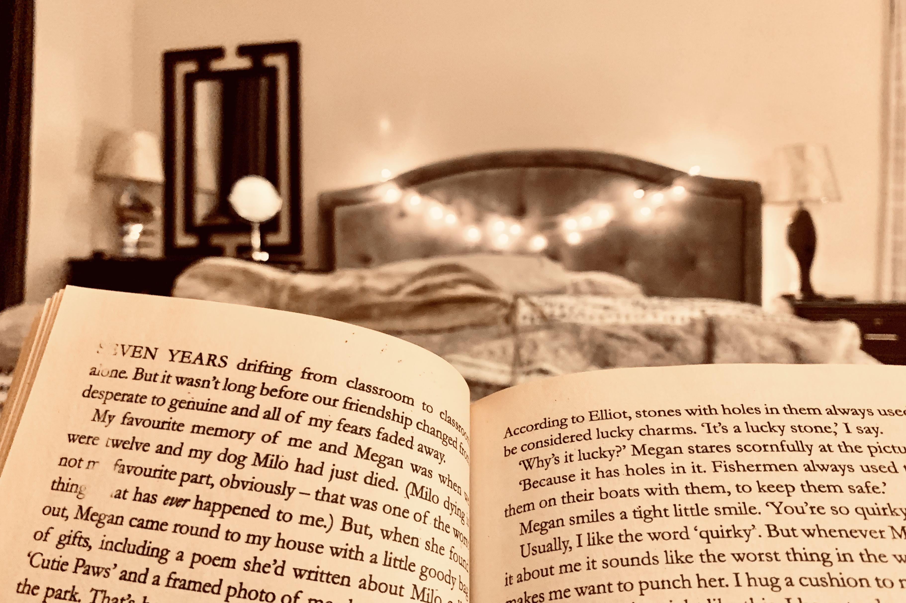

My Gallery
Here are some highlights from my hobbies and projects. Explore my journey through these images!

I love keeping a consistent GitHub streak and contributing to open-source projects.

I enjoy going for walks to relax and explore nature. It keeps me fresh and energized.

I am always on a journey to learn new skills and improve myself, from coding to personal growth.

I enjoy reading a wide variety of books that expand my knowledge and perspective.

Capturing beautiful moments through photography is one of my favorite hobbies.
I am passionate about exploring the latest advancements in technology and applying them in projects.